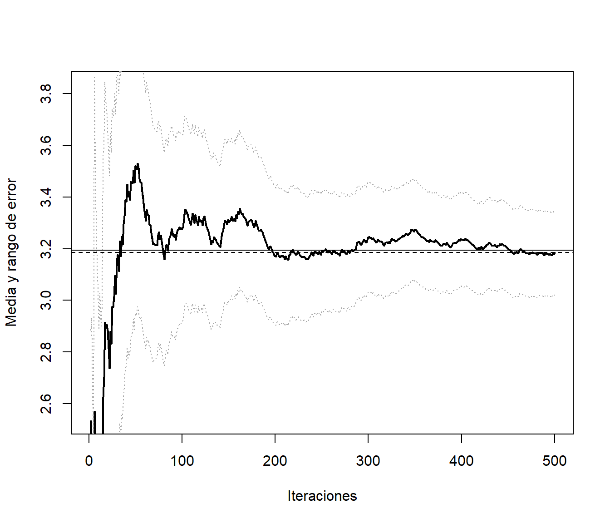

Capítulo 10 Técnicas de reducción de la varianza
10.1 Reducción de la varianza
Éstas técnicas son aplicadas normalmente cuando se pretende ofrecer respuestas lo más precisas posibles (con menor costo computacional) y principalmente sobre cantidades medias.
- Supongamos que estamos interesados en aproximar la media de un estadístico mediante simulación y no nos interesa aproximar su varianza.
Existe un sinfín de técnicas encaminadas a reducir la varianza en un estudio de simulación (respecto a una aproximación estandar). Algunas de ellas son:
Muestreo por importancia.
Variables antitéticas.
Muestreo estratificado.
Variables de control.
Números aleatorios comunes.
Métodos de remuestreo.
Condicionamiento.
…
10.2 Variables antitéticas
Supongamos que pretendemos aproximar \[\theta=E\left( Z\right)\] con \(Var\left( Z \right) = \sigma^{2}\). Si generamos \(n\) pares \(\left( X_{1},Y_{1}\right), ... ,\left( X_{n},Y_{n}\right)\) de \(X\sim Y\sim Z\) con \(Cov\left( X,Y\right) < 0\), el estimador combinado tiene menor varianza: \[\begin{aligned} Var\left( \frac{\overline{X}+\overline{Y}}{2}\right) & =\frac{1}{4}\left( Var\left( \overline{X}\right) +Var\left( \overline{Y}\right) +2Cov\left( \overline{X},\overline{Y}\right) \right) \\ & =\frac{\sigma^{2}}{2n}+\frac{1}{2n}Cov\left( X,Y\right) \\ & =\frac{\sigma^{2}}{2n}\left( 1+\rho \left( X,Y\right) \right), \end{aligned}\] que el equivalente a una muestra unidimensional independiente con el mismo número de observaciones \(2n\) (con una reducción del \(-100\rho \left( X,Y\right) \%\)).
10.2.1 Ejemplo: Integración Monte Carlo
Para aproximar: \[I=\int_{0}^{1}h\left( x\right) dx,\] a partir de \(x_{1},x_{2},\ldots,x_{n}\) \(i.i.d.\) \(\mathcal{U}\left(0,1\right)\). Podemos emplear: \[\begin{aligned} I & =E\left( \frac{h\left( U\right) +h\left( 1-U\right) }{2}\right) \\ & \approx \frac{1}{2n}\sum \limits_{i=1}^{n}\left( h\left( x_{i}\right) +h\left( 1-x_{i}\right) \right). \end{aligned}\]
10.2.2 Generación de variables antitéticas
Cuando se utiliza el método de inversión resulta sencillo obtener pares de variables con correlación negativa:
\(U\sim \mathcal{U}\left( 0,1\right)\) para simular \(X\).
\(1-U\) para simular la variable antitética \(Y\).
En el caso general, si \(X=h\left( U_{1},\ldots,U_{d}\right)\) y \(h\) es monótona puede verse (e.g. Ross, 1997) que \(Y=h\left( 1-U_{1},\ldots,1-U_{d}\right)\) está negativamente correlada con \(X\).
Si \(X\sim \mathcal{N}(\mu,\sigma)\) puede tomarse como variable antitética \[Y=2\mu-X\] En general esto es válido para cualquier variable simétrica repecto a un parámetro \(\mu\). (e.g. \(X\sim \mathcal{U}(a,b)\) e \(Y=a+b-X\)).
Crear una función que implemente la técnica de variables antitéticas para aproximar integrales del tipo:\[I=\int_{a}^{b}h\left( x\right) dx.\] Emplearla para aproximar: \[E\left( e^{\mathcal{U}(0,2)}\right) =\int_{0}^{2}\frac{1}{2}e^{x}dx\approx3.194,\label{integralmc}\] y representar gráficamente la aproximación en función de \(n\). Función objetivo:
a <- 0; b <- 2
ftn <- function(x) return(exp(x)/(b-a))
curve(ftn, a, b, ylim=c(0,4))
abline(h=0,lty=2)
abline(v=c(a,b),lty=2)
Se trata de calcular la media de \(e^{\mathcal{U}(0,2)}\):
teor <- (exp(b)-exp(a))/(b-a)
teor## [1] 3.194528Para la aproximación por integración Monte Carlo podemos emplear la función del capítulo anterior:
mc.integral <- function(ftn, a, b, n, plot=TRUE) {
fx <- sapply(runif(n, a, b), ftn)*(b-a)
if (plot) {
estint <- cumsum(fx)/(1:n)
esterr <- sqrt(cumsum((fx-estint)^2))/(1:n)
plot(estint, ylab="Media y rango de error", type="l", lwd= 2,
ylim=mean(fx)+2*c(-esterr[1],esterr[1]), xlab="Iteraciones")
abline(h = estint[n], lty=2)
lines(estint+2*esterr, lty = 3)
lines(estint-2*esterr, lty = 3)
return(list(valor=estint[n], error=2*esterr[n]))
} else return(list(valor=mean(fx), error=2*sd(fx)/sqrt(n)))
}
set.seed(54321)
res <- mc.integral(ftn, a, b, 500)
abline(h = teor)
res## $valor
## [1] 3.184612
##
## $error
## [1] 0.1619886Para la integración Monte Carlo con variables antitéticas podríamos considerar:
mc.integrala <- function(ftn, a, b, n, plot=TRUE,...) {
# n es el nº de evaluaciones de la función objetivo (para facilitar comparaciones, solo se genera la mitad)
x <- runif(n%/%2, a, b)
# La siguiente línea solo para representar alternando
x <- as.numeric(matrix(c(x,a+b-x),nrow=2,byrow=TRUE))
# bastaría con emplear p.e. c(x,a+b-x)
fx <- sapply(x, ftn)*(b-a)
if (plot) {
estint <- cumsum(fx)/(1:n)
esterr <- sqrt(cumsum((fx-estint)^2))/(1:n)
plot(estint, ylab="Media y rango de error",type="l", lwd = 2,
ylim=mean(fx)+2*c(-esterr[1],esterr[1]),xlab="Iteraciones",...)
abline(h = estint[n], lty=2)
lines(estint+2*esterr, lty = 3)
lines(estint-2*esterr, lty = 3)
return(list(valor=estint[n],error=2*esterr[n]))
} else return(list(valor=mean(fx),error=2*sd(fx)/sqrt(n)))
}
set.seed(54321)
res <- mc.integrala(ftn, a, b, 500)
res## $valor
## [1] 3.222366
##
## $error
## [1] 0.1641059Pero aunque aparentemente converge antes, parece no haber una mejora en la precisión de la aproximación. Si calculamos el porcentaje (estimado) de reducción del error:
100*(0.1619886-0.1641059)/0.1619886## [1] -1.307067El problema es que en este caso se está estimando mal la varianza (asumiendo independencia). Hay que tener cuidado con las técnicas de reducción de la varianza si uno de los objetivos de la simulación es precisamente estimar la variabilidad. En este caso, una versión de la función anterior para integración Monte Carlo con variables antitéticas, con aproximación del error bajo dependencia podría ser:
mc.integrala2 <- function(ftn, a, b, n, plot = TRUE,...) {
# n es el nº de evaluaciones de la función objetivo (para facilitar comparaciones, solo se genera la mitad)
x <- runif(n%/%2, a, b)
# La siguiente línea solo para representar alternando
x <- matrix(c(x,a+b-x),nrow=2,byrow=TRUE)
# bastaría con emplear p.e. c(x,a+b-x)
fx <- apply(x, 1, ftn)*(b-a)
corr <- cor(fx[,1], fx[,2])
fx <- as.numeric(fx)
return(list(valor=mean(fx), error=2*sd(fx)/sqrt(n)*sqrt(1+corr)))
}
set.seed(54321)
res <- mc.integrala2(ftn, a, b, 500)
res## $valor
## [1] 3.222366
##
## $error
## [1] 0.05700069Porcentaje estimado de reducción del error:
100*(0.1619886-0.05700069)/0.1619886## [1] 64.81191En este caso puede verse que la reducción teórica de la varianza es del 96.7%
10.3 Estratificación
Si se divide la población en estratos y se genera en cada uno un número de observaciones proporcional a su tamaño (a la probabilidad de cada uno) nos aseguramos de que se cubre el dominio de interés y se puede acelerar la convergencia.
- Por ejemplo, para generar una muestra de tamaño \(n\) de una \(\mathcal{U}\left( 0,1\right)\), se pueden generar \(l=\frac{n}{k}\) observaciones (\(1\leq k\leq n\)) de la forma: \[U_{j_{1}},\ldots,U_{j_{l}}\sim \mathcal{U}\left( \frac{(j-1)}{k},\frac{j}{k}\right) \text{ para }j=1,...,k.\]
Si en el número de obsevaciones se tiene en cuenta la variabilidad en el estrato se puede obtener una reducción significativa de la varianza.
Supóngase el siguiente problema (absolutamente artificial pero ilustrativo para comprender esta técnica). Dada una muestra de tamaño 10 de una población con distribución: \[X \sim \exp\left( 1 \right),\] se desea aproximar la media poblacional (es sobradamente conocido que es 1) a partir de 10 simulaciones. Supongamos que para evitar que, por puro azar, exista alguna zona en la que la exponencial toma valores, no representada en la muestra simulada de 10 datos, se consideran tres estratos. Por ejemplo, el del 40% de valores menores, el siguiente 50% de valores (intermedios) y el 10% de valores más grandes para esta distribución.
El algoritmo de inversión (optimizado) para simular una \(\exp\left(1\right)\) es:
Generar \(U\sim U\left( 0,1\right)\).
Hacer \(X=-\ln U\).
Dado que, en principio, simulando diez valores \(U_{1},U_{2},\ldots,U_{10}\sim U\left( 0,1\right)\), no hay nada que nos garantice que las proporciones de los estratos son las deseadas (aunque sí lo serán en media). Una forma de garantizar el que obtengamos 4, 5 y 1 valores, repectivamente, en cada uno de los tres estratos, consiste en simular:
4 valores de \(U[0.6,1)\) para el primer estrato,
5 valores de \(U[0.1,0.6)\) para el segundo y
uno de \(U[0,0.1)\) para el tercero.
Otra forma de proceder consistiría en rechazar valores de \(U\) que caigan en uno de esos tres intervalos cuando el cupo de ese estrato esté ya lleno (lo cual no sería computacionalmente eficiente).
El algoritmo con la estratificación propuesta sería como sigue:
Para \(i=1,2,\ldots, 10\):
Generar \(U_{i}\):
2a. Generar \(U\sim U\left( 0,1\right)\).
2b. Si \(i\leq4\) hacer \(U_{i} = 0.4 \cdot U + 0.6\).
2c. Si \(4<i\leq9\) hacer \(U_{i} = 0.5 \cdot U + 0.1\).
2d. Si \(i=10\) hacer \(U_{i} = 0.1 \cdot U\).
Devolver \(X_{i}=-\ln U_{i}\).
No es difícil probar que:
\(Var\left( X_{i}\right) = 0.0214644\) si \(i=1,2,3,4\),
\(Var\left( X_{i}\right) = 0.229504\) si \(i=5,6,7,8,9\) y
\(Var\left( X_{10}\right) = 1\).
Como consecuencia: \[Var\left( \overline{X}\right) =\frac{1}{10^{2}}\sum_{i=1}^{10} Var\left( X_{i} \right) = 0.022338\] que es bastante menor que 1 (la varianza en el caso de muestreo aleatorio simple no estratificado).
Aproximar la integral anterior empleando la técnica de estratificación, considerando \(k\) subintervalos regularmente espaciados en el intervalo \(\left[ 0, 2 \right]\). ¿Como varía la reducción en la varianza dependiendo del valor de \(k\)?
mc.integrale <- function(ftn, a, b, n, k) {
# Integración Monte Carlo con estratificación
l <- n%/%k
int <- seq(a, b, len=k+1)
x <- runif(l*k, rep(int[-(k+1)], each=l), rep(int[-1], each=l))
# l uniformes en cada uno de los intervalos [(j-1)/k , j/k]
fx <- sapply(x, ftn)*(b-a)
return(list(valor=mean(fx), error=2*sd(fx)/sqrt(n))) # error mal calculado
}
set.seed(54321)
res <- mc.integral(ftn, a, b, 500)
abline(h = teor)
res## $valor
## [1] 3.184612
##
## $error
## [1] 0.1619886set.seed(54321)
mc.integrale(ftn, a, b, 500, 50)## $valor
## [1] 3.193338
##
## $error
## [1] 0.1597952set.seed(54321)
mc.integrale(ftn, a, b, 500, 100)## $valor
## [1] 3.193927
##
## $error
## [1] 0.1599089De esta forma no se tiene en cuenta la variabilidad en el estrato. El tamaño de las submuestras debería incrementarse hacia el extremo superior.
Repetir el ejemplo anterior considerando intervalos regularmente espaciados en escala exponencial.
10.4 Variables de control
En este caso se trata de sacar partido tanto a una covarianza positiva como negativa. La idea básica es emplear una variable \(Y\), con media conocida \(\mu_{Y}\), para controlar la variable \(X\) (con media desconocida), de forma que ambas variables estén “suficientemente” correlacionadas. La versión “controlada” de \(X\) será: \[X^{\ast}=X+\alpha \left( Y-\mu_{Y}\right)\] con \(E(X^{\ast})=E(X)=\theta\). Puede verse que \(Var(X^{\ast})=Var(X)+\alpha^{2}Var(Y)+2\alpha Cov(X,Y)\) es mínima para: \[\alpha^{\ast}=-\frac{Cov(X,Y)}{Var(Y)},\] con \(Var(X^{\ast}) = Var(X) \left( 1-\rho^{2} \left( X, Y \right) \right)\) (lo que supone una reducción del \(100\rho^{2}\left( X, Y \right) \%\)).
En la práctica normalmente \(\alpha^{\ast}\) no es conocida. Para estimarlo se puede realizar ajuste lineal de \(X\) sobre \(Y\) (a partir de los datos simulados \(X_{i}\) e \(Y_{i}\), \(1\leq i\leq n\)):
Si \(\hat{x}=\hat{\beta}_{0}+\hat{\beta}_{1}y\) es la recta ajustada, con \(\hat{\beta}_{1} = \dfrac{S_{XY}}{S_{Y}^{2}}\) y \(\hat{\beta}_{0} = \overline{X}-\hat{\beta}_{1}\overline{Y}\), la estimación sería: \[\hat{\alpha}^{\ast}=-\hat{\beta}_{1}\]
Adicionalmente, para aproximar \(\theta\): \[\begin{aligned} \hat{\theta} & =\overline{X}^{\ast}=\overline{X}-\hat{\beta}_{1}\left( \overline{Y}-\mu_{Y}\right) \\ & =\hat{\beta}_{0}+\hat{\beta}_{1}\mu_{Y} \end{aligned}\]
Si \(\mu_{Y}=0\Rightarrow \hat{\theta}=\overline{X}^{\ast}=\hat{\beta}_{0}\).
Aproximar la integral anterior empleando la variable \(U\sim\mathcal{U}(0,2)\) para controlar la variable \(e^{U}\).
Se trata de calcular la media de \(exp(\mathcal{U}(a,b))\):
a <- 0; b <- 2
teor <- (exp(b)-exp(a))/(b-a)
teor## [1] 3.194528Aproximación clásica por simulación:
set.seed(54321)
nsim <- 1000
u <- runif(nsim, a, b)
expu <- exp(u)
mean(expu) ## [1] 3.182118Con variable control:
plot(u, expu)
reg <- lm(expu ~ u)$coef
abline(reg, col='blue')
# summary(lm(expu ~ u)) # R-squared: 0.9392
reg[1]+reg[2] # Coincidirá con la solución mean(expuc)## (Intercept)
## 3.204933Lo siguiente ya no sería necesario:
expuc <- expu - reg[2]*(u-1)
mean(expuc) ## [1] 3.204933Estimación del porcentaje de reducción en la varianza:
100*(var(expu)-var(expuc))/var(expu)## [1] 93.9155510.5 Números aleatorios comunes
Se trataría de una técnica básica del diseño de experimentos: realizar comparaciones homogéneas (bloquear). Por ejemplo cuando se diseña un experimento para la comparación de la media de dos variables, se pueden emplear las denominadas muestras apareadas, en lugar de muestras independientes.
Supóngamos que estamos interesados en las diferencias entre dos estrategias (e.g. dos estimadores): \[E\left( X\right) -E\left( Y\right) =E\left( X-Y\right).\]
Para ello se generan dos secuencias \(X_{1}\), \(X_{2}\), \(\ldots\), \(X_{n}\), e \(Y_{1}\), \(Y_{2}\), \(\ldots\), \(Y_{n}\) y se calcula: \[\overline{X}-\overline{Y}=\frac{1}{n}\sum_{i=1}^{n}\left( X_{i}-Y_{i}\right)\]
Si las secuencias se generan de modo independiente: \[Var\left( \overline{X} - \overline{Y} \right) = \frac{1}{n} \left( Var\left( X \right) + Var\left( Y \right) \right)\]
Si se generar las secuencias empleando la misma semilla, los datos son dependientes: \[Cov\left( X_{i}, Y_{i} \right) > 0\] y tendríamos que: \[\begin{aligned} Var\left( \overline{X}-\overline{Y}\right) & = \frac{1}{n^{2}}\sum_{i=1}^{N}Var\left( X_{i}-Y_{i}\right) = \frac{1}{n}Var\left( X_{i}-Y_{i}\right) \\ & = \frac{1}{n}\left( Var\left( X_{i} \right) + Var\left( Y_{i} \right) - 2Cov\left( X_{i},Y_{i} \right) \right) \\ & \leq \frac{1}{n}\left( Var\left( X_{i} \right) + Var\left( Y_{i}\right) \right) \end{aligned}\]
En el capítulo de aplicaciones de la simulación se empleó esta técnica para comparar distribuciones de estimadores…
10.6 Ejercicios fin de práctica
Aproximar mediante integración Monte Carlo (clásica) la media de una distribución exponencial de parámetro \(1/2\):\[I=\int_{0}^{\infty}\frac{x}{2}e^{-\frac{x}{2}}dx\] y representar gráficamente la aproximación en función de \(n\). Comparar los resultados con los obtenidos empleando variables antitéticas, ¿se produce una reducción en la varianza?
MC clásico:
nsim <- 1000
lambda <- 0.5
set.seed(1)
x <- - log(runif(nsim)) / lambda
# Aprox por MC da media
mean(x) # valor teor 1/lambda = 2## [1] 1.97439# Aprox da precisión
var(x) ## [1] 3.669456MC con variables antitéticas:
# xa <-
# mean(xa) # Aprox por MC da media (valor teor 1/lambda = 2)
# var(xa) # Aprox da precisión supoñendo independencia
# corr <- cor(x1,x2)
# var(xa)*(1 + corr) # Estimación varianza supoñendo dependenciaEstimación del porcentaje de reducción en la varianza
# 100*(var(x) - var(xa))/var(x)